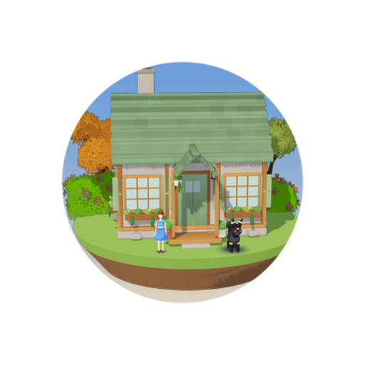

- Phones that drop off the farm now rejoin instead of going off on their own, and tell you if Tailscale is off rather than just sulking.
- Four-room houses with a lantern in every room, lit at night.
- 23 designer questions answered Shopfronts for the ramen and tea shops, Christmas stockings, Chinese New Year with Gracidea and a very special ramen, hair styles at the mirror, and Umbreon allowed indoors.
- The furniture workshop on the main street: commissions, a catalogue, two craftsmen, and you can finally sit on chairs.
- An app icon rendered from the game's own models. My house, Umbreon, me. Very on brand.
- Maker Studio's Furniture Maker and a My Creatures tab.
- Sideways play on the Galaxy S25, the Xperia and the Z Flip.
- Mimikyu rebuilt from my drawing and an Eevee in Chloe's backyard. Cloud shadows and grass that parts when you walk through it.
- Separate wallets and bags so Chloe can no longer spend my money.
- Christmas, milestones, wardrobe the designer's ten milestones, outfits and hair, shopkeeper emotes, a life-size Mimikyu.
- The two-player farm the NAS game server, the start screen, the Android app that updates itself.